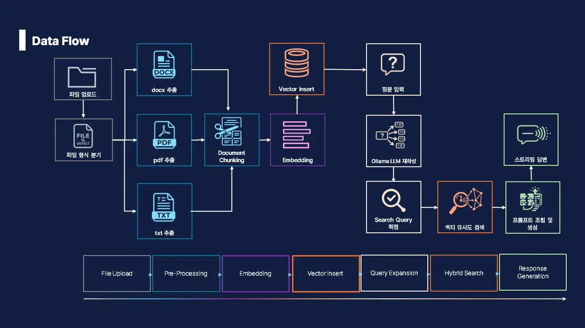
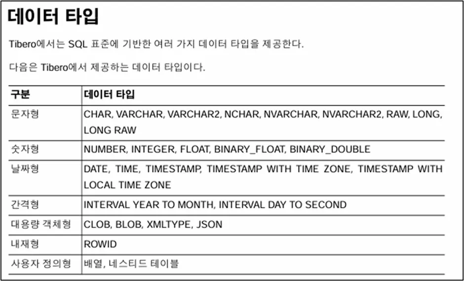
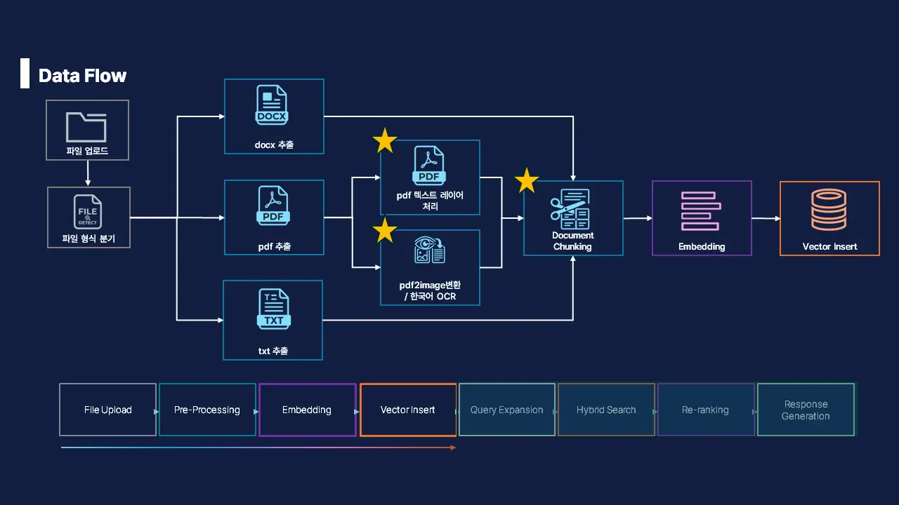
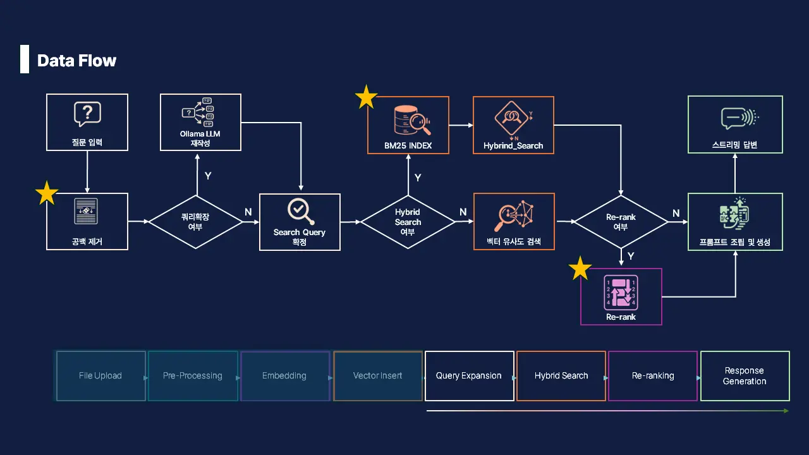
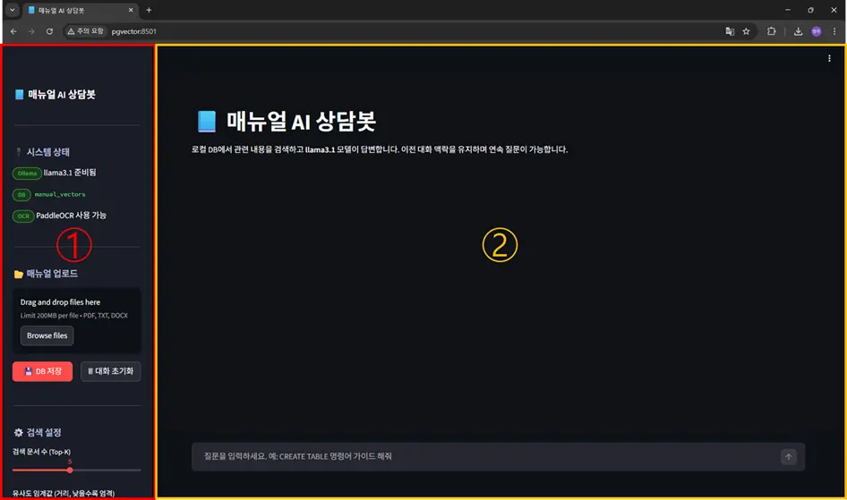
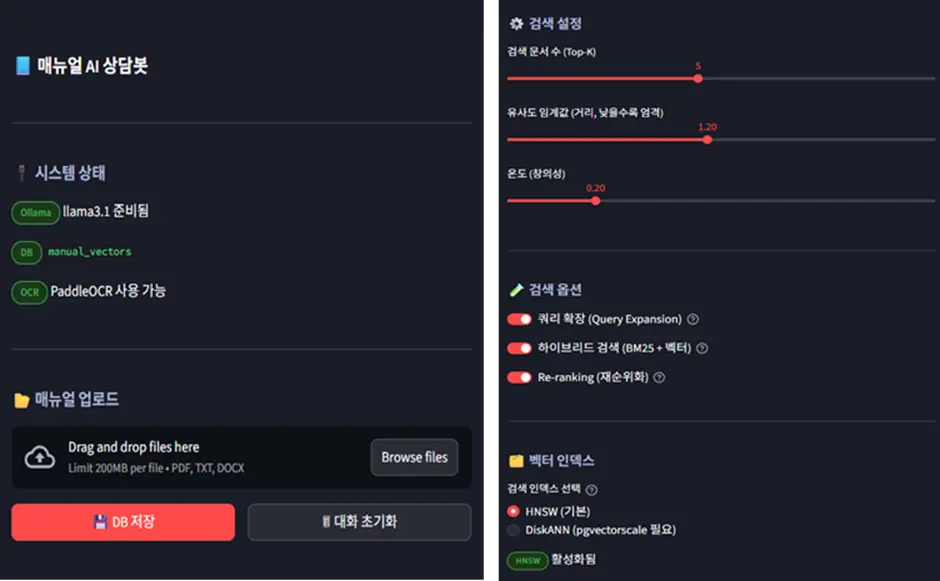
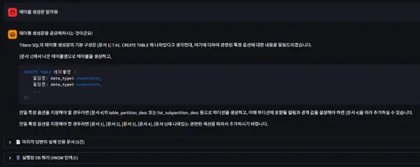
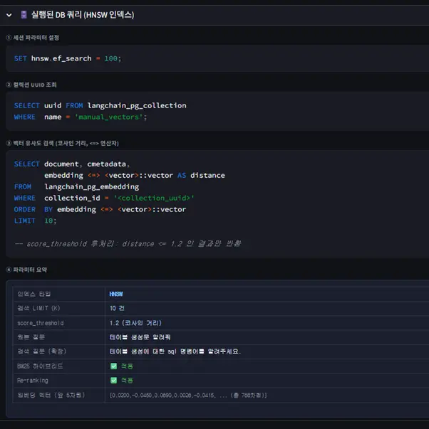

1. 들어가며
RAG 아키텍처의 핵심 축인 VectorDB, 과연 OpenSQL을 실무 RAG 시스템에 곧바로 적용할 수 있을까요? 자사 트렌드 리포트(Trend Report)의 ‘AI 시대의DBMS 활용전략’ 아티클을 실제 코드로 직접 증명해보고 싶었습니다. 본 포스팅에서는 Python을 이용해 OpenSQL 기반의 AI 미니 프로젝트를 구현하며 그 실무적 가능성을 검증해 보았습니다.
이번 프로젝트에서는 Python의 웹 UI 프레임워크인 Streamlit을 활용하여, Tibero 매뉴얼을 학습시킨 챗봇(Chatbot) 구축 과정을 통해 그 구체적인 이야기를 나누어 보려 합니다.
오픈소스 관계형 데이터베이스 관리시스템 (RDBMS) 인 PostgreSQL을 기반으로 높은 성능과 고가용성을 제공하는 TmaxTibero의 제품입니다.
2. 프로젝트 수행 여정
2.1 프로젝트 시작을 향한 첫걸음, ‘OpenSQL VectorDB 구축’
OpenSQL을 VectorDB로 완벽하게 활용하기 위해서는 핵심 모듈인 pgvector 및 pgvectorscale 설정이 필요합니다. 해당 모듈은 OpenSQL 바이너리에 기본적으로 내재되어 있어, 간단한 스크립트 실행과 익스텐션(Extension) 추가 절차만으로 빠르게 구축을 완료할 수 있습니다.
0. 사전 준비 : OpenSQL 엔진 설치 과정은 OpenSQL 공식 매뉴얼를 참고하여 구성을 완료했습니다.
💡개인 VM 환경 실습 시 주의사항
본 프로젝트를 사내 인프라가 아닌 개인의 가상 머신(VM)에 설치하는 경우, 하드웨어 가속기(AVX-512 등) 기능 제한으로 인해 고도화 모듈인 pgvectorscale의 설치가 불가할 수 있습니다. 이 경우 기본 pgvector만으로 구성을 진행하셔도 무방합니다.
사전 환경 구성이 완료된 상태에서 본격적으로 벡터 검색 기능을 추가하는 과정을 단계별로 살펴보겠습니다.
1. 패키지 설치 : 먼저 터미널을 열고, 설치 스크립트(install.sh)를 실행하여 pgvector와 pgvectorscale을 서버에 설치합니다.
# pgvector 및 pgvectorscale 설치
$ sudo -E ./install.sh pgvector
$ sudo -E ./install.sh pgvectorscale2. 데이터베이스 접속 및 Extension 활성화 : 서버 내 패키지 설치가 완료되었다면, 이제 데이터베이스에 접속하여 해당 기능들을 실제 운영 환경에서 사용할 수 있도록 확장 모듈을 활성화할 차례입니다.
# 관리자 계정으로 DB 접속
$ psql -d vector_db -U postgres
pg_vector=# CREATE EXTENSION vector;
pg_vector=# CREATE EXTENSION IF NOT EXISTS vectorscale; 3. 설치 확인 : 명령어가 에러 없이 실행되었다면, 마지막으로 \dx 명령어를 입력하여 확장 모듈이 데이터베이스 내에 활성화되었는지 점검해 봅니다.
vector_db=# \dx
List of installed extensions
Name | Version | Default version | Schema | Description
-------------+---------+-----------------+------------+---------------------------------------------
plpgsql | 1.0 | 1.0 | pg_catalog | PL/pgSQL procedural language
vector | 0.8.1 | 0.8.1 | public | vector data type and ivfflat and hnsw access methods
vectorscale | 0.9.0 | 0.9.0 | public | diskann access method for vector search 목록에 vector와 vectorscale이 정상적으로 출력된다면, OpenSQL은 LLM의 다차원 데이터를 처리할 수 있는 VectorDB로 사용할 수 있습니다.
2.2 야심 차게 설계한 ‘초기 데이터 흐름도(Data Flow)’
우리가 계획한 챗봇 미니프로젝트는 사용자로부터 파일을 업로드 받게 되면 확장자에 따른 분기 처리를 진행합니다. 이후 PyPDF, Docx2txtLoader가 텍스트를 추출하여 document chunking 후 임베딩 하는 과정으로 설계했습니다.
답변 모델의 경우 LLM 모델이 사용자 질문에 대하여 쿼리 확장 후 이를 바탕으로 벡터 유사도 검색을 진행하여 결과를 답변 받는 과정으로 진행됩니다.

2.3 가장 험난한 ‘전처리(Preprocessing)’
이 프로젝트를 기획할 때 단순히 PyPDF를 사용하여 매뉴얼을 업로드하고 DB에 적재하면 될 것으로 생각했습니다. 그런데 전처리 과정에서 사용한 Tibero 매뉴얼에는 표와 그림이 많아 텍스트로 인지하지 못하는 문제가 발생했습니다.

위와 같은 문제를 개선하고자 두 가지 해결 방안을 적용하였습니다
1. OCR 기법 이용
단순 텍스트 추출이 아닌 OCR 기법을 활용하여 문서의 레이아웃을 유지하며 마크 다운으로 추출하였습니다.
OCR의 경우 opendataloader-pdf의 hybrid 모드와 PaddleOCR을 결합하여 유실되기 쉬운 복잡한 헤더와 표 구조까지 LLM이 이해할 수 있게 추출했습니다.
# PDF Load 처리 code
def _load_pdf_safe(tmp_path: str, filename: str, status_fn=None) -> list:
from langchain_core.documents import Document
text_docs = []
ocr_docs = []
try:
if status_fn:
status_fn(f"📄 {filename}: [1/2] OpenDataLoaderPDF 텍스트 레이어 추출 중...")
loader = OpenDataLoaderPDFLoader(
tmp_path, format="markdown", hybrid="docling-fast",
hybrid_mode="auto", hybrid_fallback=True,
)
...
try:
if status_fn:
status_fn(f"🖼️ {filename}: [2/2] PaddleOCR 이미지/표/흐름도 추출 중...")
ocr_docs = _ocr_pdf_with_paddle(tmp_path, filename, status_fn=status_fn) or []
if ocr_docs and status_fn:
...
if status_fn:
src_note = []
if text_docs: src_note.append(f"텍스트레이어 {len(text_docs)}섹션")
if ocr_docs: src_note.append(f"OCR {len(ocr_docs)}섹션")
status_fn(f"✅ {filename}: 병합 완료 ({' + '.join(src_note)} = 총 {len(merged)}섹션)")
return merged2. Chunking 전략 고도화
추출된 텍스트는 마크다운 헤더(#, ##)를 기준으로 1차 분할한 뒤, 설정된 단위에 따라 Chunking을 진행했습니다. 이 과정에서 Chunking 단위가 답변 품질에 미치는 영향을 고려하여 600에서 1,200 사이의 범위에서 테스트를 진행하여 최적의 값을 도출했습니다.
# Chunking 고도화 Code
CHUNK_SIZE = 1000 # 문자 단위
CHUNK_OVERLAP = 100 # 청크 간 겹치는 문자 수
def split_documents_with_headers(docs):
from langchain_text_splitters import MarkdownHeaderTextSplitter, RecursiveCharacterTextSplitter
# 1단계: Markdown 헤더를 기준으로 분할
headers_to_split_on = [
("#", "Header 1"),
("##", "Header 2"),
("###", "Header 3"),
]
markdown_splitter = MarkdownHeaderTextSplitter(headers_to_split_on=headers_to_split_on)
# 2단계: 헤더로 나눈 텍스트가 너무 길면 글자 수 기준으로 다시 분할
text_splitter = RecursiveCharacterTextSplitter(
chunk_size=CHUNK_SIZE,
chunk_overlap=CHUNK_OVERLAP
)단순히 텍스트를 추출하는 방식에서 벗어나, OCR 기법을 도입하여 표(Table)와 도식(Diagram) 내의 텍스트 누락을 방지하고 고도화된 Chunking 전략을 적용했습니다. 이를 통해 OpenSQL(pgvector)에 적재되는 데이터의 품질을 향상시켰습니다.
아래는 그 고충의 결과물인 전처리 과정의 최종 데이터 흐름도입니다.

2.4 검색 품질을 끌어올리기 위한 ‘검색 고도화(Advanced RAG)’
초기 기획 단계에서는 별도의 고도화 로직 없이 LLM 쿼리 확장과 벡터 검색 방식만으로 구상하여 답변의 품질이 기대에 크게 미치지 못했습니다.
우리는 품질 향상을 위해 아래의 방안을 추가적으로 적용하였습니다.
1. 공백 제거
사용자 질문을 LLM에 전달하기 전 .strip()과 같은 함수로 앞뒤 공백이나 불필요한 줄바꿈을 제거하는 것은 코드로 보면 단 한 줄에 불과하지만, 질문의 노이즈를 걷어내어 VectorDB 검색 정확도를 높이고 LLM을 사용자의 질문 의도에만 집중시키고자 했습니다.
# 공백제거
if user_question and user_question.strip() and not st.session_state.search_in_progress:
q = user_question.strip()
st.session_state.pending_question = q
st.session_state.search_in_progress = True
st.session_state.search_results_cache = None
st.session_state.streaming_response = ""
st.session_state.streaming_done = False
st.session_state.messages.append({"role": "user", "content": q})
st.rerun()2. Hybrid Search
VectorDB에서 제공하는 유사도 기반 검색만으로는 높은 품질의 검색 결과를 기대하기 어려워 BM25(BestMatching) 인덱스를 사용한 키워드 검색으로 고도화 하였습니다.
# bm25 인덱스
def build_bm25_index():
try:
from rank_bm25 import BM25Okapi
except ImportError:
return None, []
try:
with psycopg.connect(RAW_CONN_STRING) as conn:
with conn.cursor() as cur:
cur.execute(
"SELECT uuid FROM langchain_pg_collection WHERE name = %s",
(COLLECTION_NAME,)
)
row = cur.fetchone()
if not row:
return None, []
collection_id = row[0]
cur.execute("""
SELECT document, cmetadata
FROM langchain_pg_embedding
WHERE collection_id = %s
""", (collection_id,))
rows = cur.fetchall()
if not rows:
return None, []
corpus = [r[0] for r in rows]
metadatas = [r[1] for r in rows]
tokenized = [doc.split() for doc in corpus]
bm25 = BM25Okapi(tokenized)
return bm25, list(zip(corpus, metadatas))
except Exception:
return None, []3. Re-rank
Hybrid Search의 결과로 가져온 15개의 결과 자료 중 다시 한 번 사용자 질문에 가까운 답변을 선정하여 상위의 5개만 남기는 작업을 진행하였습니다.
# Re-rank
def rerank_results(query: str, results: list, top_n: int):
if not results:
return results, False
try:
from sentence_transformers import CrossEncoder
reranker = CrossEncoder("cross-encoder/ms-marco-MiniLM-L-6-v2", max_length=512)
pairs = [(query, doc.page_content) for doc, _ in results]
scores = reranker.predict(pairs)
reranked = sorted(zip(results, scores), key=lambda x: x[1], reverse=True)
final = []
for (doc, orig_dist), ce_score in reranked[:top_n]:
adjusted_dist = max(0.0, 1.0 - (ce_score / 10.0))
final.append((doc, adjusted_dist))
return final, True
except Exception:
return results[:top_n], FalseLLM 모델은 위의 과정을 거친 고도화된 답변을 기반으로 context를 조립하고 프롬프트를 생성하여 사용자에게 답변을 하게 됩니다.
최종적으로 설계한 검색 고도화 과정의 데이터 흐름도는 다음과 같습니다. 단순히 질문을 전달하는 기존 방식에서 벗어나 입력된 질의의 공백 제거 및 노이즈 필터링을 우선 수행합니다. 이후 BM25 기반의 키워드 검색과 벡터 검색을 결합한 Hybrid Search를 진행하며, Re-rank 과정을 도입해 답변에 가장 적합한 문서의 우선순위를 재정렬함으로써 답변의 정확도를 향상시켰습니다.

2.5 OpenSQL 내부를 들여다보다 : ‘VectorDB 처리 과정’
최종적으로 VectorDB에 적재되는 과정은 다음과 같습니다. 앞서 ‘2.3 전처리 고도화’ 단계를 거쳐 정제된 비정형 데이터는 임베딩 모델을 통해 고차원 벡터로 변환됩니다. 이렇게 생성된 벡터 데이터는 OpenSQL에 Vector Type으로 Insert 됩니다.
# OpenSQL insert
if i == 0:
PGVector.from_documents(
embedding=embeddings_model,
documents=batch,
collection_name=COLLECTION_NAME,
connection=CONNECTION_STRING,
use_jsonb=True,
embedding_length=768,
distance_strategy=DistanceStrategy.COSINE,
)
else:
get_vector_store(embeddings_model).add_documents(batch)모든 과정을 거쳐 실제 OpenSQL 내부의 Vector Type 컬럼에 데이터가 성공적으로 적재된 모습입니다.
LangChain 프레임워크와 연동되어 생성된 langchain_pg_embedding 테이블 확인 시, 각 텍스트 청크(document)와 매뉴얼의 페이지 정보가 담긴 메타데이터(cmetadata)가 매핑되어 있습니다.
vector_db=> select id, collection_id, document, cmetadata from langchain_pg_embedding limit 1;
id | collection_id | document | cmetadata
----------------------------------------------------------------------------------------------------
a1ac20f2-6077-4c59-a1e... b404988d-bff0-400c-8a83-605e933ccd82
Tibero SQL 참조 안내서 Tib... {"page": 1, "format": "markdown"...
vector_db=> select embedding from langchain_pg_embedding limit 1;
embedding
----------------------------------------------------------------------------------------------------
[0.06449785,0.022238033,-0.0011201695,0.004357547,0.005372008,-0.009654339,0.0071247704,0.049291328,0.016551513,0.020040942,0.021813512,-0.0005637871,-0.017966386,0.029500183,-0.066931784,0.0015917988,0.004648865,-0.034931097,0.037023902,0.027073406,-0.058330048,0.025863115,-0.008989315,-0.0011951516,0.013634617,-0.07318656,0.034068666,-0.06178462,0.01981942,-0.008329533,0.03640274,-0.06098575,-0.047965497,0.036749683,0.038917862,-0.0006998836,-0.026056759,-0.0035579666…다음은 Hybrid Search 중 벡터 검색의 실제 구현 로직입니다.이 함수는 사용자의 질의를 벡터로 변환한 뒤, OpenSQL(pgvector) 내에서 코사인 유사도를 기반으로 가장 연관성이 높은 데이터를 직접 추출합니다. 사용자의 질문과 DB에 저장된 벡터 데이터 사이의 거리를 계산하여 유사도가 높은 순으로 데이터를 추출합니다. 기존의 RDBMS와는 다르게 키워드가 일치하는 데이터를 찾는 것이 아닌 질문의 ‘의미’가 가장 가까운 데이터를 DB에서 가져옵니다.
def hnsw_similarity_search(emb, query: str, k: int, score_threshold: float):
from langchain_core.documents import Document
query_embedding = emb.embed_query(query)
vec_literal = "[" + ",".join(str(x) for x in query_embedding) + "]"
vec_preview = "[" + ",".join(f"{x:.4f}" for x in query_embedding[:5]) + f", ... (총 {len(query_embedding)}차원)]"
st.session_state.last_db_query = {
"index_type": "HNSW",
"set_param": f"SET hnsw.ef_search = {HNSW_EF_SEARCH};",
"collection_query": (
f"SELECT uuid FROM langchain_pg_collection\n"
f"WHERE name = '{COLLECTION_NAME}';"
),
"vector_query": (
f"SELECT document, cmetadata,\n"
f" embedding <=> <vector>::vector AS distance\n"
f"FROM langchain_pg_embedding\n"
f"WHERE collection_id = '<collection_uuid>'\n"
f"ORDER BY embedding <=> <vector>::vector\n"
f"LIMIT {k};\n\n"
f"-- score_threshold 후처리: distance <= {score_threshold} 인 결과만 반환"
),
"vec_preview": vec_preview,
"score_threshold": score_threshold,
"k": k,
}
with psycopg.connect(RAW_CONN_STRING) as conn:
with conn.cursor() as cur:
cur.execute(f"SET hnsw.ef_search = {HNSW_EF_SEARCH};")
cur.execute("SELECT uuid FROM langchain_pg_collection WHERE name = %s", (COLLECTION_NAME,))
row = cur.fetchone()
if not row:
return []
collection_id = row[0]
cur.execute("""
SELECT document, cmetadata, embedding <=> %s::vector AS distance
FROM langchain_pg_embedding
WHERE collection_id = %s
ORDER BY embedding <=> %s::vector
LIMIT %s
""", (vec_literal, collection_id, vec_literal, k))
rows = cur.fetchall()
return [
(Document(page_content=doc_text, metadata=metadata or {}), float(distance))
for doc_text, metadata, distance in rows
if distance <= score_threshold
]2.6 파이썬으로 가볍게 그려낸 지능형 챗봇, ‘Streamlit UI 구현’
Python 기반의 빠른 UI 구현을 위해 오픈소스 웹 프레임워크인 Streamlit를 이용하였습니다.
화면은 크게 두 영역으로 구성되어 있습니다. ① 화면은 사용자 편의성을 고려하여 사이드바를 통해 매뉴얼 PDF를 간편하게 업로드할 수 있도록 구성했으며, ② 화면에서는 등록된 문서를 바탕으로 질의응답이 이루어지도록 설계하였습니다.

①의 사이드바는 파일 업로드 및 업로드 진행사항을 확인할 수 있습니다. 또한, 검색 품질에 관련된 유사도 임계 값이나 Hybrid Search를 통해 목록화 할 문서의 개수 및 사용할 인덱스, 검색 고도화의 각각의 단계의 수행 여부도 설정할 수 있습니다.

②의 메인 화면에서는 사용자가 직접 질문을 입력할 수 있으며, 입력된 질문과 함께 전처리 단계에서 확장된 쿼리도 직관적으로 보여줍니다.
특히 답변의 신뢰성을 확보하기 위해 근거 문서를 하단에 제시함은 물론, 실제 OpenSQL에 수행되는 쿼리를 실시간으로 시각화하여 보여주었습니다.


3. 마치며: OpenSQL, RAG 시스템의 든든한 베이스캠프가 되다
최근 RAG 아키텍처가 유행하면서 VectorDB 도입을 고민하는 경우가 많습니다.
이번 AI 매뉴얼 챗봇 미니 프로젝트를 직접 구현하며 가장 크게 체감한 것은 ‘OpenSQL로 실무 수준의 VectorDB 환경을 구축할 수 있다’는 사실이었습니다.
OpenSQL에 pgvector와 pgvectorscale 확장 기능(Extension)을 활성화하는 것만으로도 LLM이 필요로 하는 빠르고 정확한 유사도 검색 기능에 대한 제공이 가능함을 확인하였습니다.
HNSW 인덱스를 활용한 검색 속도나 데이터 적재 과정 또한 특이사항이 없었습니다.
결론적으로 자사 트렌드 리포트에서 시작된 궁금증은 이번 미니 프로젝트를 통해 ‘현업에서 즉시 사용 가능함’을 확인하였습니다.
이미 OpenSQL 인프라가 갖춰져 있나요? 그렇다면 VectorDB를 위한 추가적인 인프라 도입 고민은 잠시 내려놓고, Python 스크립트와 OpenSQL을 연결해 여러분만의 AI 프로젝트 첫 단추를 시작해 보는 것을 추천드립니다!
사용 기술 스택 : Python3.10.12, psycopg3, Streamlit, LangChain, Ollama, HuggingFace, opendataloader-pdf, PaddleOCR, OpenSQL3.18, pgvector, BM25